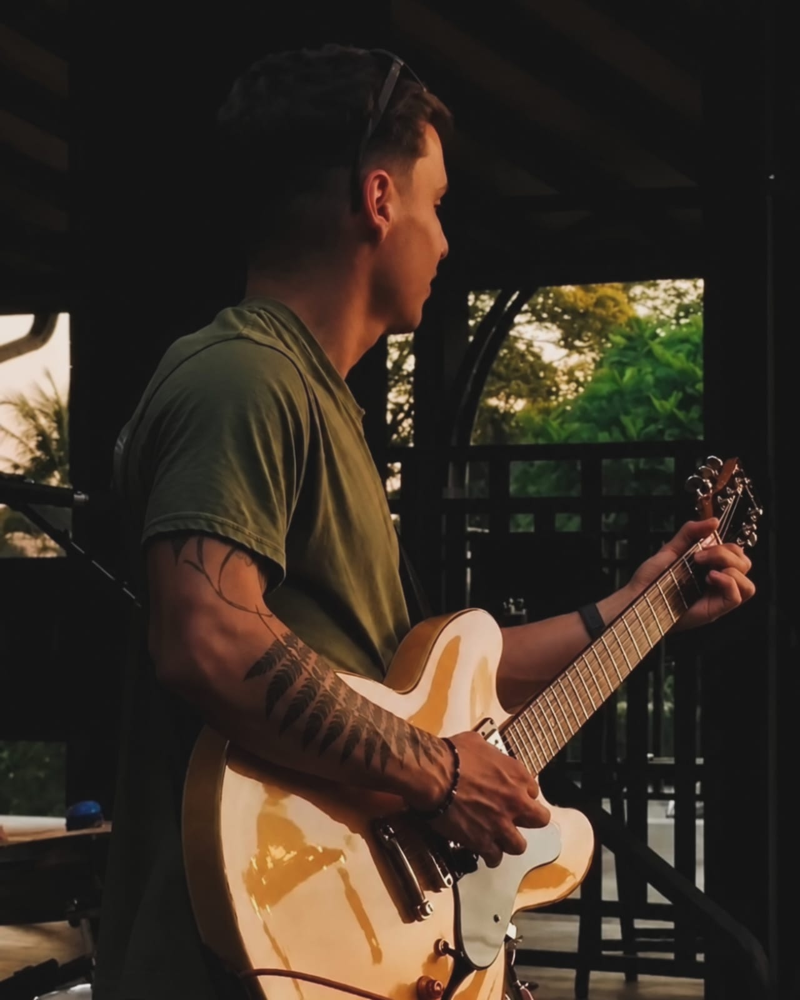
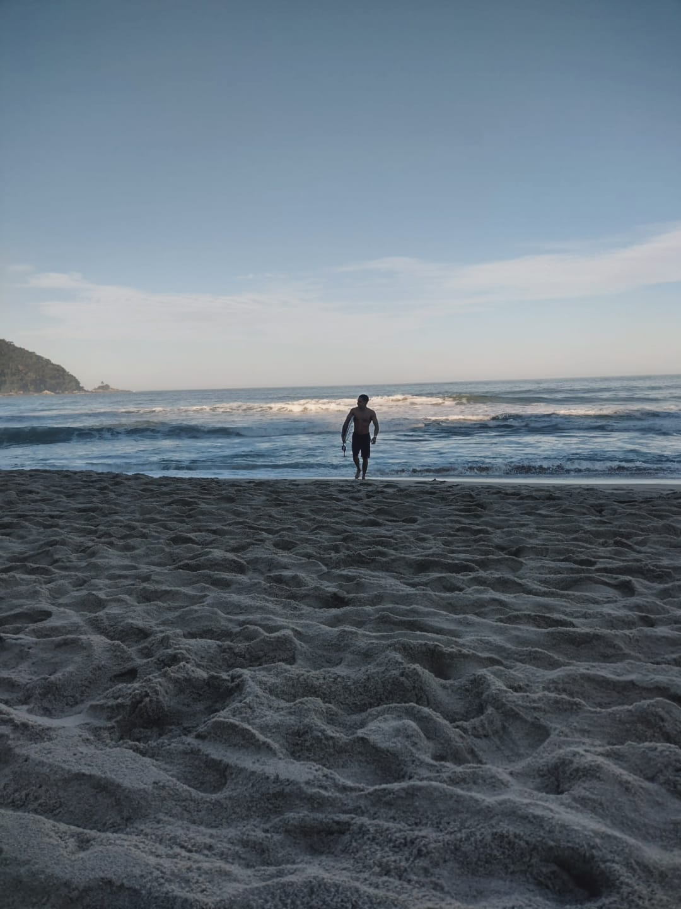

Música
Guitarra, violão e arranjos. Timbres orgânicos que atravessam R&B, soul, pop rock e a liberdade de experimentar.
Palco & expressãoGuitarrista & Audio Developer
Som com raiz.
Liberdade pra criar.
Entre cordas, códigos e a vontade de descobrir a próxima onda.

Muito prazer, sou o Hugo
Sou guitarrista e estudante de Sistemas de Informação na Unicamp. A música me leva ao palco; a curiosidade me faz querer entender tudo o que acontece por trás de um timbre.
John Mayer, Mateus Asato, AnaVitória, Lagum e Daparte fazem parte das minhas referências. Gosto de sons orgânicos, de espaço para sentir e de encontrar a guitarra certa para cada história.
Essa busca também passa pela produção musical e pelos estudos em JUCE, C++ e processamento digital de áudio. Da corda ao algoritmo, sigo aprendendo a criar.
Conheça meu universoO que me move
A sensibilidade de quem toca.
A curiosidade de quem constrói.
Guitarra, violão e arranjos. Timbres orgânicos que atravessam R&B, soul, pop rock e a liberdade de experimentar.
Palco & expressãoTexturas no Reaper, com Neural DSP, Desolate Guitars, sintetizadores e efeitos. Camadas que dão identidade ao som.
Textura & atmosferaEstudos em C++, Python, JUCE e DSP. Explorando como plugins e algoritmos transformam sinais em possibilidades musicais.
Código & descobertaReaper · Neural DSP · Desolate Guitars · TyrellN6 · PG-8X · Chow Tape Model · Cassette 909 · Valhalla Supermassive · TDR Nova

Respirar também faz parte
Entre uma nota e outra,
um pouco de mar.
Encontros & experiências
Projetos que fazem parte
da minha trajetória.
Rock clássico com a pegada moderna do pop e soul. Na guitarra, construo harmonias e arranjos que vão do clean ao saturado, sempre a serviço da emoção e da história.
Guitarra & arranjosReleituras de MPB, blues e rock dos anos 80. Um espaço para explorar dinâmica, respeitar as raízes de cada canção e colocar feeling em cada frase.
Guitarra & releiturasUma passagem pelo metal progressivo, por ritmos não convencionais e arranjos mais pesados. Experiência que ajudou a refinar minha técnica e a encontrar minha identidade artística.
Guitarra & trajetóriaPesquisa e estudos em processamento digital de sinais, arquitetura de VSTs e física do som. Um olhar curioso sobre cada etapa entre o algoritmo e o timbre final.
Explore meu GitHubBora fazer um som?
Shows, gravações, colaborações
e novas possibilidades com tecnologia musical.